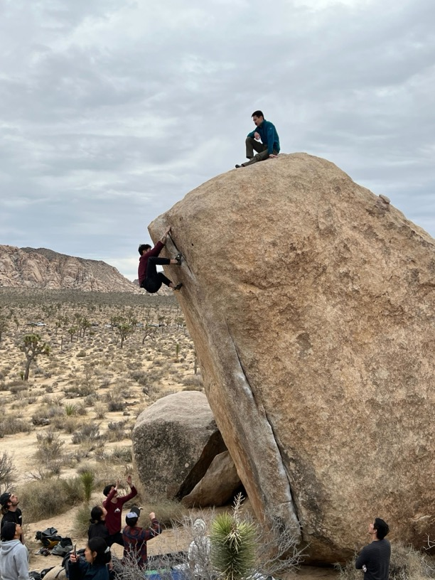
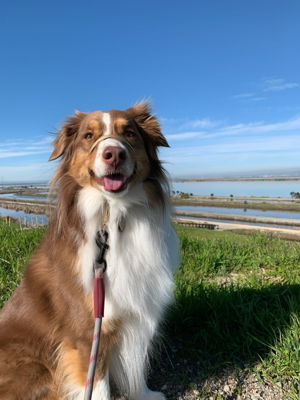

My work centers on systems of care, participation, and meaning. I focus on service design, semiotics, and civic tech.
It's extended from a broader inquiry into who institutions protect, who they exclude and how they might be reconfigured to support social mobility and community enfranchisement.
This perspective has shaped my work across initiatives in criminal justice reform, youth social-emotional development, and community-based arts education.
I’m drawn to projects that engage critical inquiry, semiotic systems, and civic infrastructure, where design becomes a lens for transformation, ethics, and empathy.
Outside of design

